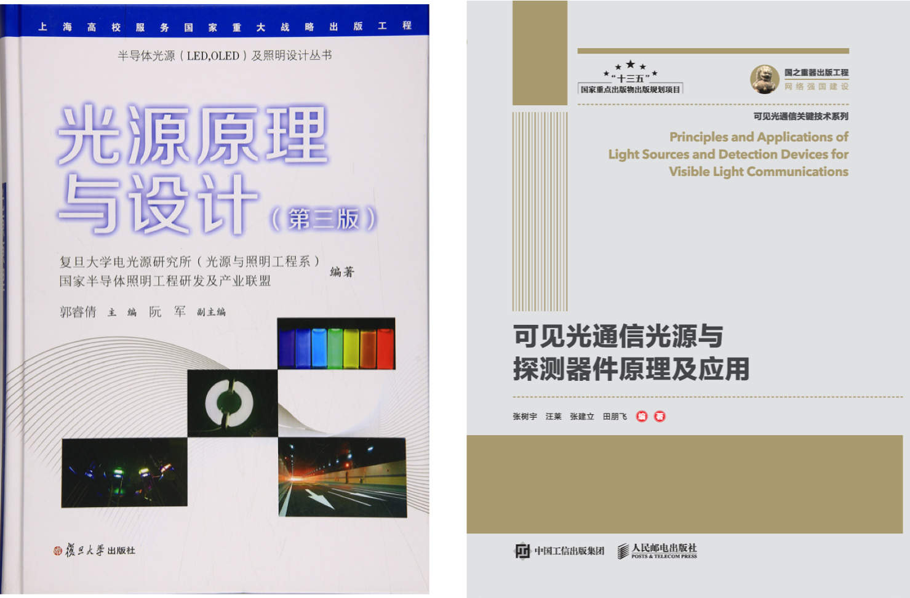
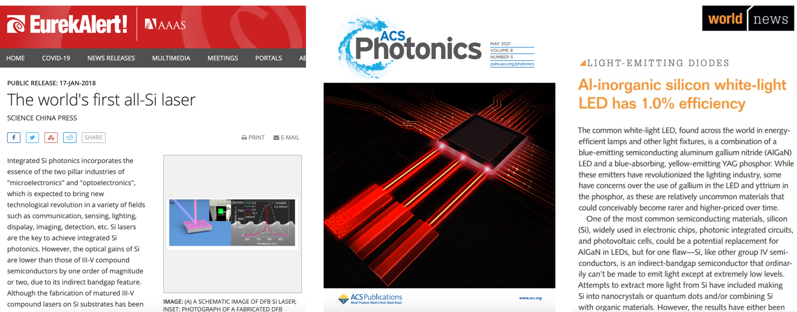
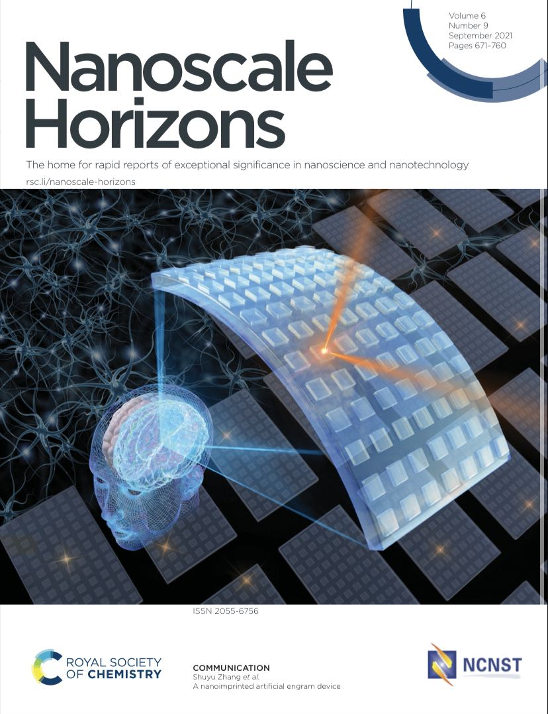

有机半导体可见光通信（2015年 - 2020年）
有机半导体，因为其易制备、易集成、柔性、环保等特点，能够为可见光通信系统提供诸多潜在优势。有机半导体材料可以替代常规的LED荧光粉，实现高带宽；OLED可以作为可见光通信发射端，同时提供通信和照明功能；有机光伏器件可以作为可见光通信接收端，同时实现通信和供电功能。目前，OLED调制带宽已经达到245MHz（由英国圣安德鲁斯大学团队实现），通信速率超过1.1Gbps@2m，正在逐渐逼近micro-LED的水平，有望成为可见光通信领域重要且极具成长空间的半导体器件。本工作聚焦微纳光学对有机半导体可见光通信收发终端的一系列性能优化方法，并建立终端设计模型。该工作开始于英国博后期间参与的EPSRC项目UP-VLC，回国后得到国家自然基金委青年项目、上海市科委人才项目、科技部重点研发子课题的支持。
有机半导体材料用于可见光通信发射端
J. Lightwave Technol., 2018, 36(10): 1862-1867 (http://doi.org/10.1109/JLT.2018.2793217)
有机半导体材料用于可见光通信接收端
Optics Express, 2017, 25(18): 21926-21934 (https://doi.org/10.1364/OE.25.021926)
有机光伏器件用于可见光通信接收端
Optica, 2015, 2(7): 607-610 (https://doi.org/10.1364/OPTICA.2.000607)
作为共主席，组织召开了2018年亚洲通信与光子学会议（ACP 2018）的可见光通信Workshop，并做邀请报告。并于2018年第二届光信息与光网络大会（GoInc 2018）、2017年中国通信国际会议（IEEE/CIC 2017）的可见光通信Workshop以及2016年国际引领青年材料科学家会议（IC-LYMS 2016）做有机半导体可见光通信系列工作的邀请报告。
参与编写教材《光源原理与设计（第三版）》，负责第五章内容，此书入选上海高校服务国家重大战略出版工程。参与编写“十三五”国家重点出版物出版规划项目、国之重器出版工程《可见光通信》系列丛书之《可见光通信光源与探测器件原理及应用》，作者排序为第一。

硅纳米晶激光器（2017年 – 至今）
硅光芯片能够解决微电子芯片的数据通信瓶颈，实现大规模分布式计算。硅光芯片的首选方案是单片集成，同时要求其生长方式需与硅基微电子工艺流程兼容。而目前硅光芯片单片集成受制于硅光源的发展，特别是硅激光器。现有最佳的替代方案是使用III-V族激光器键合到硅片上，而本工作使用硅作为激光增益材料，并针对性的设计加工了DFB谐振腔，实现了光泵浦的全硅激光器。该工作在18年发表后获国内外30余家科研机构和专业媒体的报道，并入选“2018中国光学十大进展”候选推荐。在此基础上，本工作进一步优化谐振腔工艺，提高品质因数，降低激射阈值，收窄激射峰宽，并实现了激射波长的大范围（>100 nm）可调、以及激光的面发射与边发射。
本工作在实现硅激光器的基础上，进一步对硅激光器的工作机理进行了研究，解释了其不同于直接带隙量子点的反常激射特性，发现硅纳米晶界面激子自陷态扮演着激子的亚稳态蓄水池作用（能抑制俄歇复合，促进粒子数反转条件达成）。基于该发现，建立了高增益硅纳米晶激射的物理图像和数值模拟模型，验证了与激子自陷态电子释放速率相关的泵浦通量-功率转变特性。同时，纳秒脉冲光泵浦实验的成功也让电激励硅激光器的实现看到了曙光，本工作目前正攻坚电激励的全硅激光器。工作被选为ACS Photonics的Outside Front Cover（封一），并入选“2021中国光学十大进展”候选推荐。此外，作为实现电激励全硅激光器的前置条件，本工作发展出了支持大电流密度和高亮度的白光硅LED，获LaserFocusWorld专栏报道。
这一系列工作得到上海市科委“科技创新行动计划”基础研究领域重点项目支持。作为共主席，组织并主持了PIERS2018（Toyama）和PIERS2019（厦门）的硅激光器分会。
光泵浦全硅激光器
Science Bulletin, 2018, 63(2): 75-77 (http://doi.org/10.1016/j.scib.2018.01.006)
波长可调谐全硅激光器
IEEE Journal of Selected Topics in Quantum Electronics, 2000, 26(2): 1500107(https://doi.org/10.1109/JSTQE.2019.2918934)
边发射全硅激光器及激射机理
ACS Photonics 2021, 8, 5, 1353–1363 (https://doi.org/10.1021/acsphotonics.0c01846)
(Outside Front Cover,
https://pubs.acs.org/toc/apchd5/8/5)
报道链接
EurekAlert：https://www.eurekalert.org/pub_releases/2018-01/scp-twf011618.php
LaserFocusWorld：https://www.laserfocusworld.com/lasers-sources/article/1655540/allsilicon-laser-achieves-high-optical-gain
Phys.org：https://phys.org/news/2018-01-world-all-silicon-laser.html
中国科学院：http://www.cas.cn/kj/201801/t20180122_4633132.shtml
上海市科委：http://stcsm.sh.gov.cn/xwzx/kjzl/20180119/0016-24497.html
科学网：http://news.sciencenet.cn/htmlnews/2018/1/400523.shtm
2018中国光学十大进展候选推荐：https://mp.weixin.qq.com/s/k5sc-geJjXem1cmhqPO8Rg
2021中国光学十大进展候选推荐：https://mp.weixin.qq.com/s/kR2fex4EKcE_jMkYBNFx9Q
白光硅LED
Optics Express, 2020, 28(1): 194-204 (https://doi.org/10.1364/OE.382691)
LaserFocusWorld专栏报道：https://www.laserfocusworld.com/lasers-sources/article/14074214/alinorganic-silicon-whitelight-led-has-10-efficiency

要真正设计出高效的硅激光器，需要对硅纳米晶发光机制有清晰的认知，后续工作聚焦硅纳米晶局域态发光机制：
Physical Review B, 2022, 106(15): 155425 (https://doi.org/10.1103/PhysRevB.106.155425)
高灵敏度微流检测与类脑记忆器件（2019年 – 2021年）
从爆炸物检测到癌症诊断，无标记传感器因其应用场景普适而备受关注。得益于微纳加工方法的进步，光学折射率传感器以极高的灵敏度、实时的测试速度、以及紧凑的结构设计而展示出广阔的前景。本工作先提出了一种被动式传感器件，通过使用低折射率压印材料（n=1.34），开发出对称导模共振微流传感器，实现了高灵敏度的传感，其灵敏值（=灵敏度/共振线宽）达到4200，比传统非对称导模共振传感器高出48倍。该工作进一步将低折射率微纳结构用于主动式DFB激射微流传感器件，打破了该类型器件高灵敏度与低激射阈值不可兼得的局面，在灵敏度提升3倍的情况下阈值降低75%。结合DFB激光具有的单模激射特征及纳米压印工艺在成本与应用方面的优势，该类型器件是极具前景的片上薄膜型紧凑集成光子传感模块，甚至可以实现时间/空间分辨的检测。
另一方面，最新研究发现，形成大脑记忆最关键的成因并非细胞神经突触，而是跨脑区链接的印迹细胞。目前报道的类脑器件都是基于人工神经突触的神经可塑性，而本工作关注能否实现基于人工印迹细胞的类脑器件。该工作利用低折射率压印材料对外界刺激的非对称响应特性及神经可塑性，开发了人工印迹细胞器件来模拟生物印迹细胞行为，可实现记忆形成、检索、巩固、移植、篡改等记忆功能。该工作被选为Nanoscale Horizons的Outside Front Cover（封一）。
对称导模共振微流传感器
Optics Express, 2019, 27(24): 34788-34802 (https://doi.org/10.1364/OE.27.034788)
DFB激射微流传感器
Organic Electronics, 2020, 85: 105851 (https://doi.org/10.1016/j.orgel.2020.105851)
基于人工印迹细胞的类脑器件
Nanoscale Horizons, 2021, 6: 718-728 (https://doi.org/10.1039/D1NH00064K)

低温等离子体材料制备与功能化改性（2017年 – 至今）
纳米颗粒在环境传感、光/电催化、储能等方面有重要应用，而控制其分布是充分发挥其性能的重要一环。二维负载材料如石墨烯，能够起到调控纳米颗粒分散性的作用，还能提高载流子输运性能，从而大幅提高纳米颗粒性能。但常规条件下的石墨烯是低反应活性物质，往往需要在高温甚至高压和强酸强碱条件下才能发生化学反应，对于新型石墨烯衍生材料的合成与改性是一个束缚。本工作聚焦等离子体催化石墨烯反应，可以在常温常压无腐蚀性条件下，引发石墨烯的还原、氧化、缺陷修复、掺杂、接枝、外延生长和交联等系列化学反应，并应用于环境传感、电催化析氢电极、超级电容器电极负载材料等方向，推进实现新能源领域碳中和的发展目标。该工作已成功实现石墨烯的功能化改性，并基于此实现了纳米颗粒分散性的调控，合成了不同组分的纳米复合材料，包括石墨烯与金纳米颗粒、石墨烯与铂钯合金颗粒等。该系列工作在《物理学报》发表邀请综述，并入选当期编辑推荐优秀论文。
近日，该工作还成功合成了石墨烯与铂单原子、以及石墨烯与过渡金属二维材料异质结的材料体系，其电催化析氢性在小电流和大电流密度下（10-1000mA/cm2）的过电位都能达到世界领先水平（待发表），而且该技术方法可实现快速制备，成本低、无污染，易于产业化。对于机理的深入理解、规模化发展、以及产业化转化是该工作在下一阶段重点攻关的方向。该工作得到国家自然科学基金委面上项目支持。
氧化石墨烯的等离子体还原与修复
Applied Surface Science, 2018, 452: 481-486 (https://doi.org/10.1016/j.apsusc.2018.04.272)
等离子体方法合成石墨烯与金纳米颗粒复合材料体系
Applied Surface Science, 2019, 473: 83-90 (https://doi.org/10.1016/j.apsusc.2018.12.125)
Journal of Materials Science, 2021, 56: 1359–1372 (https://doi.org/10.1007/s10853-020-05376-x)
等离子体方法合成石墨烯与铂钯合金颗粒复合材料体系
J. Alloys Compd., 2020, 835: 155334 (https://doi.org/10.1016/j.jallcom.2020.155334)
等离子体对石墨烯的功能化改性邀请综述
物理学报, 2021, 70(9): 095208 (http://doi.org/10.7498/aps.70.20202078)
大电流密度工作环境高性能电催化析氢电极
Carbon, 2022, 187: 386-395 (https://doi.org/10.1016/j.carbon.2021.11.026)
Advanced Science, 2022, 9: 2202445 (https://doi.org/10.1002/advs.202202445)
邃瞳科学云报道：https://mp.weixin.qq.com/s/94K2zgF_cyuY1UkFF_Hc4g
Chemical Engineering Journal, 2023, 460: 141676 (https://doi.org/10.1016/j.cej.2023.141676)
学院公众号报道：https://mp.weixin.qq.com/s/J49qef6dsZFf3CY1Z7WR1g